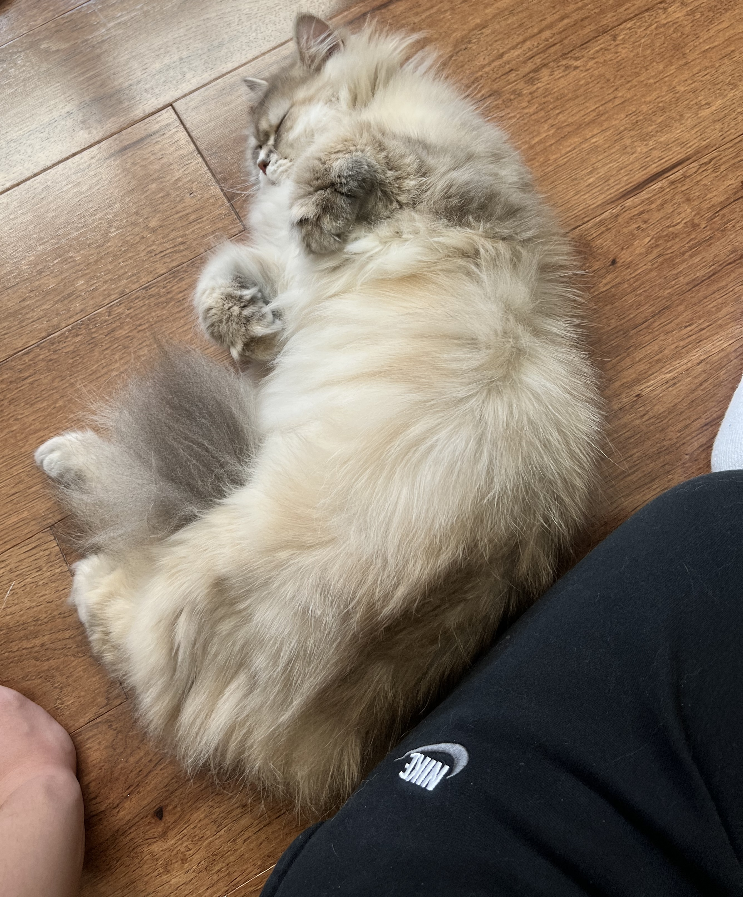
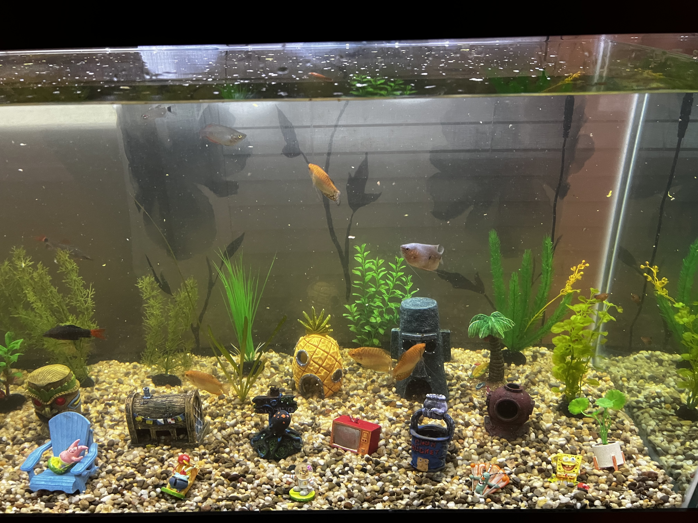

So, basically I don't have a pet with me of course, since I don't have an emotional support pet. However, I do have fishes. I never named them with my parents, so the fishes are nameless, but definitely there. I like the spongebob decor, and the shark the best. As for the cat, it was never mine, but I would like to say that I did have to take care of him, his name is Buns. I took care of Buns for my brother, and he was sadly kidnapped away from me, because of my brother. He is still eating well and living well, still very cute. My brother also got another cat, that looks the same, but unfortunately I didn't get any photos of him. His name is Kiwi.
I like a variety of things, be it playing video games, listening to music, and participating in volleyball and basketball games with my friends. I show my keyboard here, because it is dear to me. The keyboard was made from my friend that gifted it to me for my birthday. There was a former keyboard that was made by him as well. It was a pink and white sakura keyboard that worked and felt very good for its price.
For my first essay, I wrote an enconium about keyboards. The essay incorporates my love for keyboards and explanation of why the keyboard is such a good item that isn't just a day to day tool that helps you along your journey.
Keyboards are used daily, in one form or another. For example, digital keyboards on a smartphone, or a physical keyboard that types millions of emails each day . The physical keyboard is more than just a tool to type, but an extension to everyone’s lives. As an extension, it is not necessary but could be beneficial. Today, electronics are used every single day in some form or another , either for professional use or leisure use, and to accompany most electronics, a keyboard is used. To write this essay, a keyboard is used. To get into a computer, the keyboard is used to type the password that allows entry into the computer. The keyboard is an item that is the passageway to many things that people have been ignorant about. The keyboard is used for many things that are not even the slightest looked at or praised, for example, innovation, inspiration, and a hobby.
To begin looking at a keyboard, going back to the roots of the invention that inspired the keyboard is necessary. The typewriter is the archaic father of the keyboard, patented in 1868 by Christopher Latham Sholes. The original typewriter only had 28 keys that were heavily influenced by a piano’s layout. The format of the typewriter changed three more times until it closely resembled the main parts of the keyboard currently: the most popularly known keyboard format; QWERTY (not including the F keys and the extra keys to the right of the enter key) (Brahambhatt). To give credit where credit is due, the invention of the QWERTY typewriter brought forth many pieces of history as physical copies, however, imagine if the people currently were to use typewriters to write an essay. The difficulties of just removing a singular mistake are abysmal. With the invention of the modern QWERTY keyboard, the singular mistake could be easily removed with the stroke of a key, and just as if nothing happened, people could continue back on track to what they were doing. Comparatively, the importance of keyboards cannot be overlooked. When working on a certain task has there ever been a moment of eureka that occurs, but not acted upon? The same idea goes for keyboards.
People have been pondering since the existence of humans, and there is no difference when it comes to keyboards. To explain the simple rundown of the inner mechanisms of the modern keyboard is that there are batteries, a simple printed circuit board and a microprocessor. When the keys are pressed, the keys send three volts of electricity through the conductive lines to be sent to the microprocessor (Branch Education 00:01:06-00:02:05). Through this interaction the microprocessor sends information to the main processor which then puts the information on the screen. The video’s explanation is much more intriguing compared to the simple rundown, and with the complexities of such an item, there is bound to be some inspiration to someone . On a larger scale, the intrigue could turn into something much larger, this could be an opportunity for people to pursue a certain field related to hardware or even a hobby.
How might a keyboard be a hobby? This question may have formed when reading the last sentence of the introduction paragraph. There are many ways a keyboard can be a hobby. The simplicities and complexities in building a keyboard and modifying a keyboard could both be ways a keyboard could be a hobby. Building a keyboard from its components, previously stated in the second paragraph, could just be as interesting as putting together a car, but much less labor intensive. The simplicity of putting the keycaps on a keyboard, to the complexities of soldering certain parts of the circuit board in a keyboard could not just be calming but also in other aspects earn the person money by selling their creations . Having the viability of changing certain aspects of a keyboard for example, tape modding, lubing, coin modding, foam modding, band-aid modding, o-ring mods, holee mod, changing the keyboard itself, changing the switches and a bunch more things that could be done to adjust the satisfactory levels of the keyboard to the person’s liking (Bonifield and Coke). There are infinite amounts of modifications that can be done to a mechanical QWERTY keyboard is as intriguing as, for example, crocheting, where there are multiple skill sets that can be learned from and mastered, however, for keyboards, not one thing is certainly “mastered.” The product that is produced can have multiple intricacies that are easily failed, and that is why the hobby of keyboards is so intriguing.
From modifying a keyboard as a hobby, to the keyboard being an inspiration, the keyboard is a multifaceted object that should be reconsidered. The keyboard is also a much better product compared to the archaic typewriter that required much effort to revise a mistake. When looking at a keyboard the next time, think back to the ways it has evolved, and the multiple ways it can contribute to society. Do the same with everything, question everything.
With the amount of decisions we make every day, things may seem overbearing, maybe even too much to take. There are conscious decisions, like deciding what to do, and when we do it, and subconscious decisions that you make in an instant. Those are the types of decisions that do not have as much weight on your life, but if changed, could very well be changing the course of your life. As we have been talking about throughout class, there is some relationship between computers and how interconnected it is with our lives. The same goes for keyboards and how it is very interconnected with our daily lives. We end up spending hours of time on the keyboard typing away at work or maybe even in the future a job that requires multiple hours of working with a keyboard, mainly typing emails. To get away from the idea of monotonously working on a keyboard, you can incorporate ways to thoughtfully and mindfully work with keyboards, including health, hygiene, and maybe taking it in as a hobby.
Hobbies are something that usually morphs into your work, but when that is not the case, life can feel soul wrenching. When you want to do something for fun, you would trade a lot of your time to get the money required to have the fun, usually, unless the fun you partake in does not take up much if any money. In a study done with a variety of people ranging from eleven to thirty, the average time spent typing on keyboards was 3.2 hours per day (Vivek et. al). This would most likely be white collar jobs like office jobs, where at least a third of the time is spent on typing emails in an eight hour work day, and maybe outside of work, you own a desktop or a laptop you continue to work on. For the eleven to eighteen year olds, maybe even up to twenty two year olds, they might just spend that much time on homework, or video games. Writing essays and even research essays require tons of time. Essays, depending on the amount of revisiong, could be from a couple hours to double digits. Research essays can take upwards of hundreds of hours for graduate students or even undergraduate students in college, and maybe high school. The amount of work that is being done on the keyboard is ludicrous and usually something that is monotonous or strenuous. There are not many ways to prevent how monotonous the task is, as it solely depends on how much you enjoy the task, but for however strenuous it is, you can add or change a couple of things to help you with your life. To type faster is something that is a skill, not a given talent, so to make it easier to type, there are typing tests to increase the speed at which you work (Evolution). Practice makes perfect.
To have a healthy relationship with a keyboard, you should probably understand the downsides of working at a keyboard for a majority of the time, ways to prevent it, and to better your situation. Just like how doing typing tests can decrease the time spent on a keyboard typing, you can also decrease the strain on your wrists with more ergonomic keyboards, like the split keyboard, or even switching the style of the keyboard. Some of you may have heard of the Dvorak keyboard or even the Colemak style, which both are better in terms of finger placement. QWERTY is very popular, but known to be not the most effective, also very straining to the fingers (WhatPulse). However, QWERTY is one of the more popular known ones, which are already customized towards nearly over half the world, including Asians, Latin derived languages, and even some African languages. It truly is hard to break tradition. The keyboards might have their respective “consonants” over the QWERTY keyboard like Japanese or Korean (Mullaney et. al). In addition to exploring keyboard types, you can continue to maintain a more sanitary relationship with the keyboard by cleaning it at least every month or two. You can do this with specialized compressed air, and a toothbrush. The compressed air can easily blow out the crumbs and the dust stuck under your keyboard, and the toothbrush would get through the surface of the keys and some of the more stubborn pieces under the keys (Smith). As for the surface, you can use alcohol wipes or disinfecting wipes to get rid of the bacteria that may be there from just the dust or the accumulation from the oil in your fingers. All this cleaning can help you think more mindfully about the keyboard and the amount of time you spend typing away your life. The same idea goes with living in a room and cleaning it with vacuums and other materials.
As previously mentioned, you could do typing tests to improve your words per minute while working, but working is not the only thing that requires typing, you could be coding for fun, playing games on a computer for fun, which may all require typing. Imagine this, you are in a furious debate with someone online, boom, if you were able to type really quick and make your points first, you would have the upperhand and go on the offense instead of the defense. You could also think of keyboards in a physical way as a way to add to your style. Knowing the components of what makes a keyboard beautiful to your own standards. It could be like decorating your work environment in a meaningful way, as if you were to pick up modifying a keyboard, you could do it as a hobby, and maybe even sell keyboards, or build yourself something like a life-long companion. There is a whole rabbit hole to go down, for example, tape modding, lubing, coin modding, foam modding, band-aid modding, o-ring mods, holee mod, changing the keyboard itself, changing the switches and a bunch more things that could be done to adjust the satisfactory levels of the keyboard to the person’s liking (Coke).
Keyboards have become something that is inevitable in our lives, and we have to find ways to work around it. For example, in the long term, we can try to get a job that may not require as much time spent on a keyboard. It is a bit unfortunate that we have to spend a lot of time on the keyboard as a student spending a ton of time in front of the screen typing to make do with the amount of essays we have to type. For short-term decisions, maintaining a good clean relationship with the keyboard is very beneficial for your own health. If your wrists or other areas around your arm start to hurt, you might want to change the type of keyboard, or even change to other styles of keyboards that are more finger friendly. Working on keyboards is similar to working on cars, it is much easier, but something that is similar. There are a lot of worries in life, however, keyboards shouldn’t be on the top of the list. Yes, it is something to worry about, but not something that is life or death.
Coke, Christopher. “Mechanical Keyboard Tuning Guide: How to Make Your Mechanical Keyboard Feel and Sound Its Best.” Tom’s Hardware, Future US Inc., 27 Feb. 2022, www.tomshardware.com/features/mechanical-keyboard-tuning-guide.
Dhakal, Vivek et. al. “(PDF) Observations on Typing from 136 Million Keystrokes.” Observations on Typing from 136 Million Keystrokes, 2018, www.researchgate.net/publication/324659119_Observations_on_Typing_from_136_Million_Keystrokes.
Mullaney, Thomas S., et al. Your Computer Is On Fire. The MIT Press, 2021.
Smith, Jake. “How to Properly Clean Your Keyboard, One of the Germiest Places You Touch Daily.” How to Clean Your Keyboard the Right Way, According to a Cleaning Expert, 2020, www.prevention.com/health/a31700300/how-to-clean-keyboard/.
WhatPulse. “The Evolution of Keyboards: From Qwerty to Mechanical.” TypeTest.Io Blog, 22 Dec. 2023, typetest.io/blog/posts/2023-12-22-the-evolution-of-keyboards-from-qwerty-to-mechanical.html.